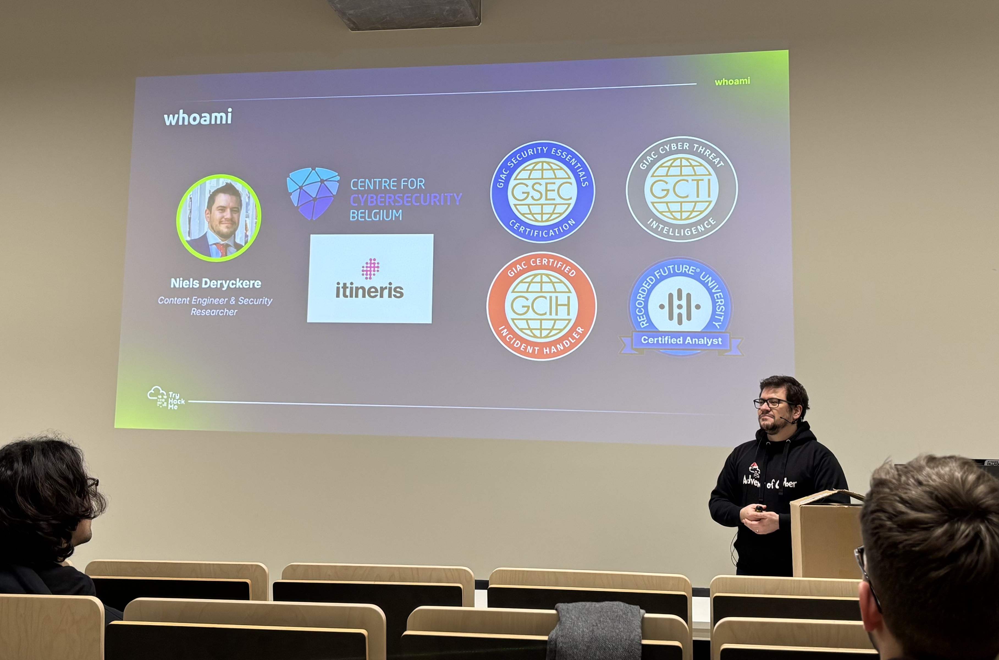

Tech&Meet: TryHackMe! - Challenges of continuous learning and how TryHackMe can help you grow üë©ü誂Äçüíªüîê
About the talk
Our speaker for the event was Niels Deryckere. Niels is a passionate cyber security professional and is currently working as a Content Engineer & Cyber Security Researcher at TryHackMe. He is focused on creating accessible, hands-on blue team security content.
He previously worked as a CTI analyst for the CCB and as a Security Analyst for Itineris, and before that he was a teacher. Niels has the following certifications: GCTI, GSEC, GCIH, CCNA, OSCP (ongoing), Recorded Future Certified Analyst.
During this talk he touched upon some very interesting topics who, in my opinion, aren't talked about enough. Think about for example the cybersecurity skill gap...
"Companies want to increase their security but don't want to invest" ~ Niels
Current state of cyber security education
The point was made that the current state of cyber security education is evolving but there is still a skill gap. Let's clarify what that means: there are a lot of people who want to get into cyber security and land a job but just don't have the hands on experience. Employers want to hire people who have experience but how can you get experience if you can't get a job? Fortunatly alternative ways like CTF, gamified learning are becoming more popular, used. We learned that people who have 0 experience and with just half an hour a day (microlearning) can already get a lot of this well saught after experience. These are not the only things that are used, Niels also mentioned the importance of certifications, bootcamps, internships, government support, ...even touching upon how AI comes into play here.
Challenges of continuous learning
Continous learning is a must in cyber security. The landscape is always changing and you need to keep up with it. Niels mentioned that the biggest challenge is time. Each day there are new threats, attack vectors, vulnerabilities, ... and keeping up with this can be hard to manage. He mentioned that even if companies will invest in you as a cyber security professional, you still need to invest in yourself. This is where TryHackMe comes in. It is a platform that helps you learn and keep up with the ever changing landscape of cyber security. It is a platform that is accessible, hands-on and gamified which makes it very fun to learn.
TryHackMe: What, When, Why, Who, Where
TryHackMe was founded in 2018 by Ben Spring and Ashu Savani. They focus on the hands-on hacking content and also make it so that a lot of content is accessible for free. The platform is used by a ton of people and numbers show, they already have over 4 million registred users üéâ.
Conclusion
Having tested the platform myself, I was glad and interested to see how these minds behind these platform think about how they always are improving. Catching up with Niels in the Q&A with some drinks was also a nice way to connect and get to know more about the current things he is working on. At the end Niels also gave us some challenges to solve in exchange for some TryHackMe swag üòä (i solved them all!!!).
Overall, I was very pleased with the talk I got me thinking about the broad picture of cybersecurity and I am definitely looking forward to the next Tech&Meet event.